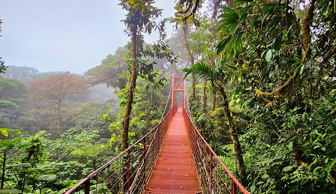
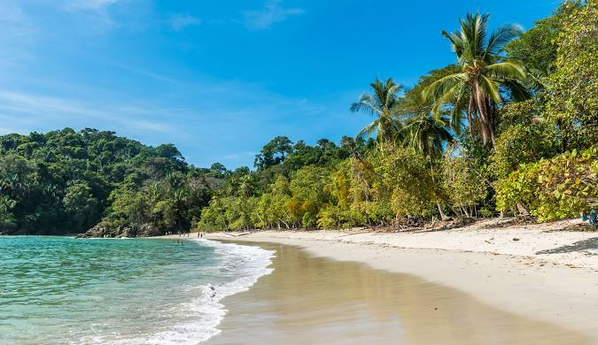
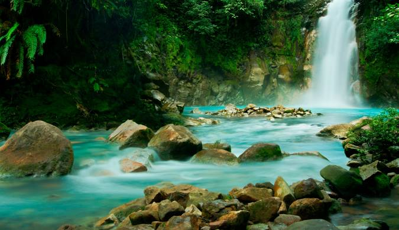

Retour aux destinations



🇨🇷 Costa Rica
Météo actuelle
Chargement de la météo...
Informations générales
Capitale:
San José
Continent:
Amérique centrale
Population:
~5.1 million d'habitants
Langue:
Espagnol
Monnaie:
Colón costaricien (₡)
Devise:
"Pura Vida"
Parcs nationaux et réserves
Parc national Manuel Antonio - Plages et forêt tropicale
Parc national du volcan Arenal - Volcan actif et sources chaudes
Réserve de Monteverde - Forêt de nuages et ponts suspendus
Parc national de Tortuguero - Canaux et tortues marines
Parc national du Corcovado - Biodiversité exceptionnelle
Parc national de Cahuita - Récif corallien protégé
Faune et flore
Singes hurleurs et capucins
Paresseux - Symbole du pays
Toucans et aras colorés
Frogs aux couleurs vives
Orchidées et plantes tropicales
Quetzal resplendissant
Activités
Surf - Plages de Tamarindo et Jacó
Randonnée dans la forêt nuageuse
Observation des tortues (selon la saison)
Canopy - Tyroliennes dans la forêt
Plongée dans les Caraïbes
Visite de plantations de café
Conseils de voyage
Saison sèche: Décembre à Avril (haute saison)
Prévoyez un imperméable en saison des pluies
Louez un 4x4 pour les routes secondaires
Respectez la nature et les animaux
Utilisez un répulsif anti-moustiques
Ne nourrissez pas les animaux sauvages
Spécialités culinaires
Gallo Pinto - Riz et haricots pour le petit-déjeuner
Casado - Plat complet traditionnel
Ceviche - Poisson mariné au citron
Café - L'un des meilleurs au monde
Tres Leches - Gâteau crémeux